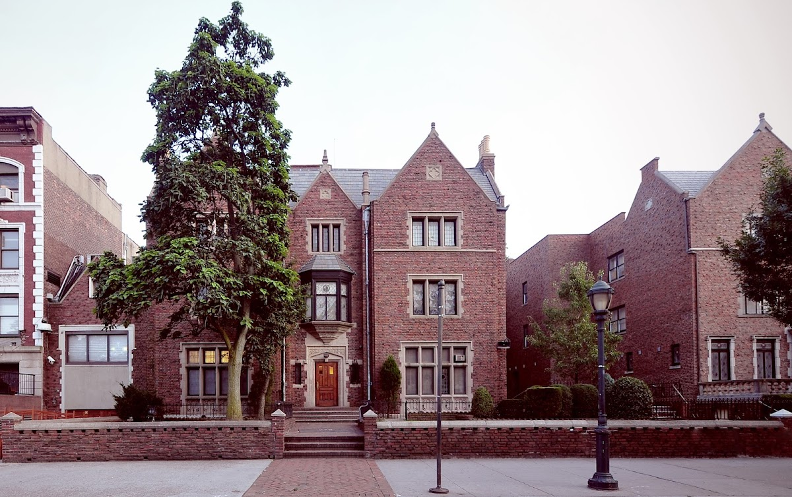
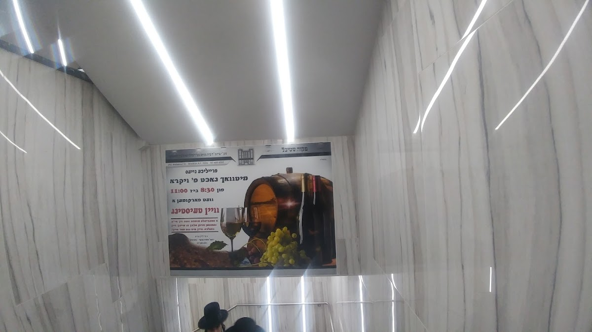
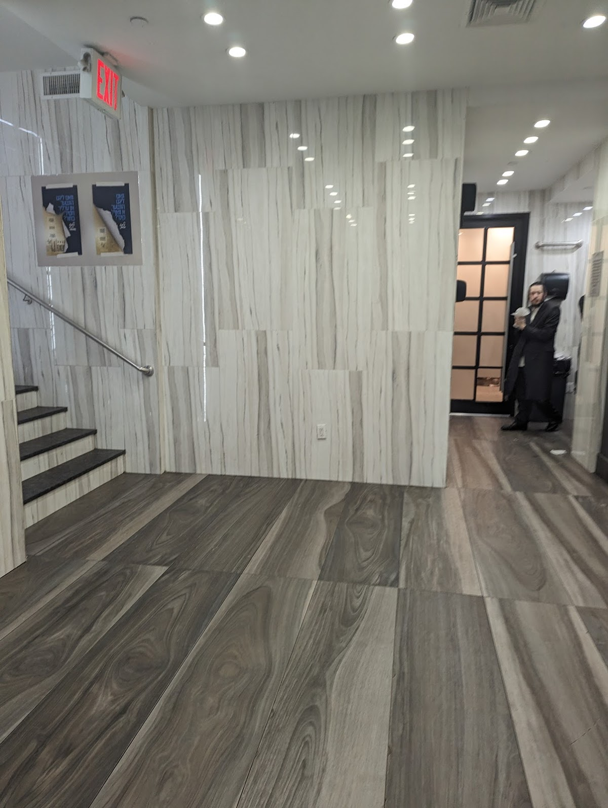
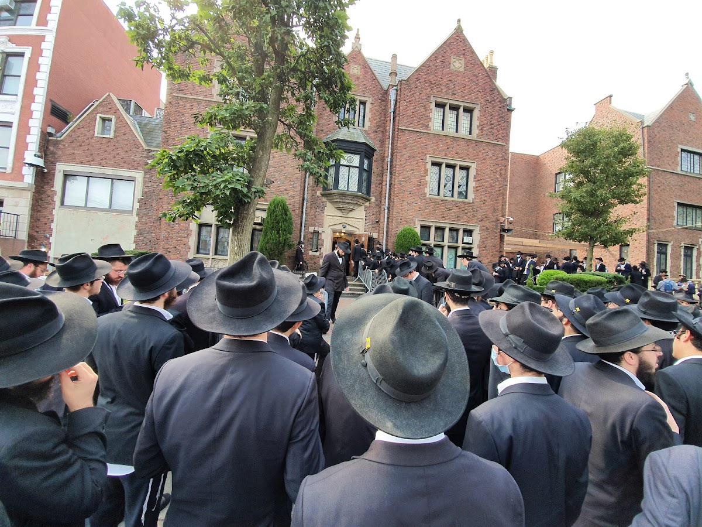

Public / private
Wallabout Hasidic Compound
Political will can build houses all you need is the right god. A large housing development in the Wallabout neighborhood of Brooklyn, primarily serving the Hasidic community.
Background
Developed by the Rabsky Group, this compound transformed a former industrial site, previously used by Pfizer, into a residential complex with approximately 1,000 housing units. The project faced zoning challenges but was eventually approved, showcasing the influence of organized community efforts in urban development.
Original AI-assisted background; not independently verified.
From the original map
Rabsky Group, and the Hasidic power they yield turned this lot (zoned for industrial previously) which at one point was a factor or warehouse for Pfizer into around 1,000 housing units, with a bunch of retain and even closed pedestrian plaza streets. Its amazing what highly organized political will can do!
Check current access before visiting. A place on this map is not necessarily open to the public.
Nearby places
- 301 Greene Ave1.1 mi ↗
- 245 Washington Ave1.1 mi ↗
- 246 Washington Ave1.1 mi ↗
- Claremont/Vanderbilt New townhouses with communal garden1.2 mi ↗
Straight-line distances, not walking routes.
Discussion & corrections




40.70126, -73.94953 · Explore the surrounding area ↗